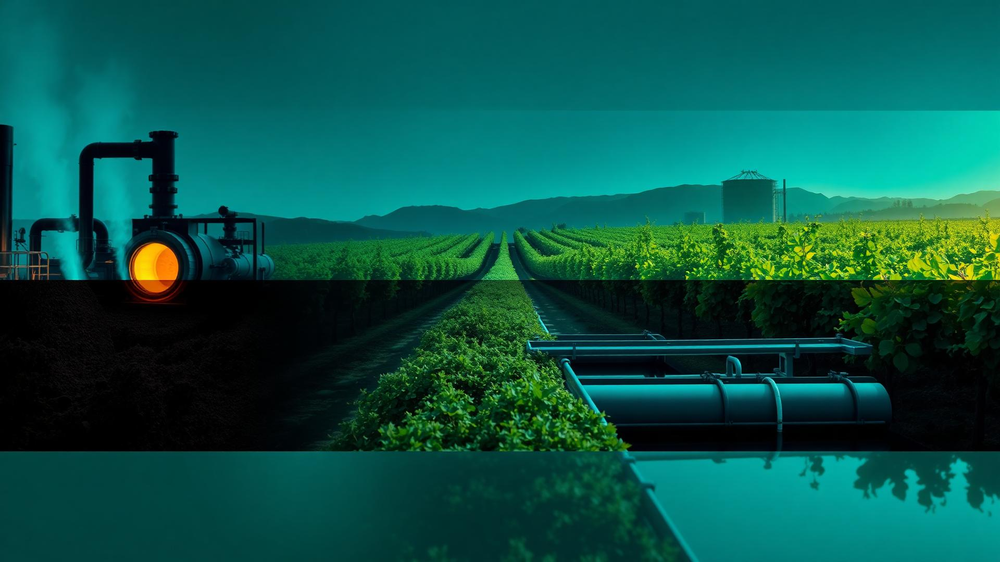
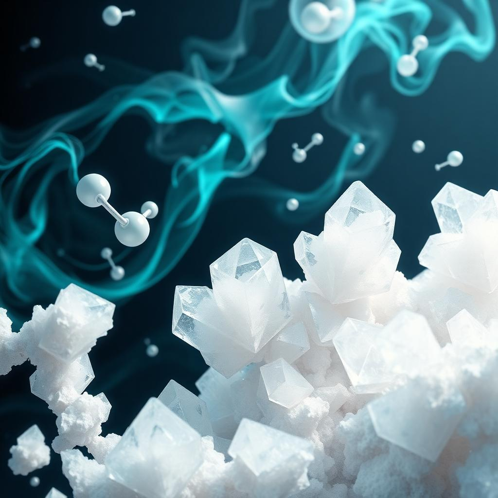
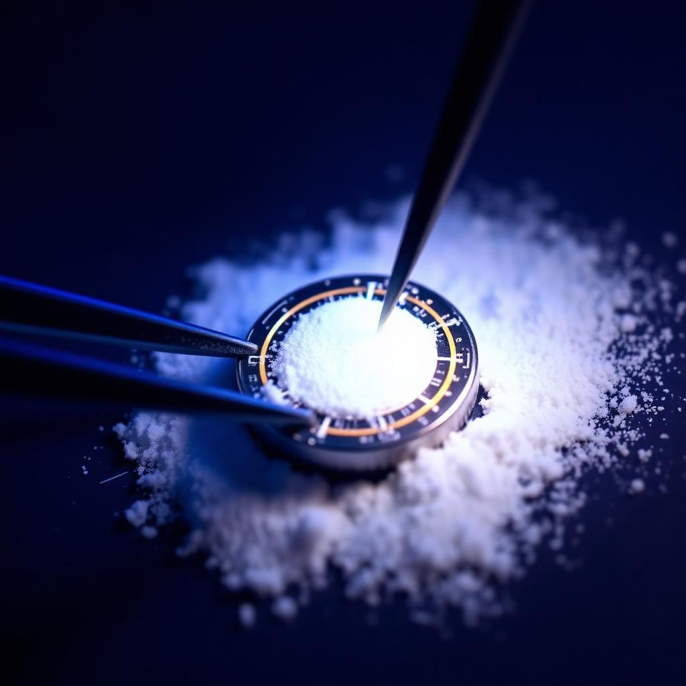

Industries
Industries we serve. A mineral platform.
From glass furnaces to vineyard soils, water treatment trains to polymer compounders — AragoCor aragonite is engineered by nature and specified across critical industrial markets.
Products
Four product families. One naturally occurring mineral.
Every product ships with the documentation and specifications required for procurement, formulation and evaluation.
Fine Aragonite
Formulations and applications requiring smaller particle sizes.
Request specificationStandard Agricultural Grade
Agricultural, horticultural, soil-amendment and blending applications.
Request specificationCoarse Aragonite
Filtration, construction, environmental or particle-size-specific applications.
Request specificationCustom-Sized Material
Manufacturers, formulators, researchers and specialty industrial users.
Request specificationProduct specification
High-purity natural oolitic aragonite — typical values.
| Property | Specification |
|---|---|
| CaCO₃ | ≥ 97.5% |
| Calcium content (Ca) | ~ 39–40% |
| Moisture | < 0.3% |
| Mineral form | Oolitic aragonite |
| Crystal structure | Orthorhombic |
| Specific gravity | 2.93+ |
| Mohs hardness | 3.5 – 4 |
| Appearance | White to off-white granular |
Typical screen size distribution
Representative natural grade — U.S. standard mesh, % retained.
| U.S. standard mesh | Percent retained |
|---|---|
| 4 | 0–1% |
| 8 | 1–4% |
| 16 | 3–11% |
| 30 | 10–26% |
| 50 | 40–67% |
| 100 | 80–98% |
| 140 | 93–99% |
| 200 | 99–100% |
Values are typical and application-dependent, not guaranteed; each lot is confirmed on its certificate of analysis. Screen distribution is representative of a natural grade and varies by product. Offered for your consideration, investigation and verification — not a warranty.

- Higher CaO contribution per ton
- Furnace efficiency evaluation
- Lower-iron, optical-grade purity
- CO2 emissions opportunity
- Lower melt/decomposition temperature (≈825°C vs ≈1,339°C for limestone)
| CaCO₃ | ≥ 97.5% |
| Whiteness | ≥ 92 |
| Fe₂O₃ | ≤ 0.04% |
| Typical mesh | 100–325 |

- OMRI Certified
- Higher solubility profile
- Soil structure support
- Carrier compatibility
- ~39–40% calcium, ≥ 97.5% CaCO₃, < 0.3% moisture
| CaCO₃ | ≥ 97.5% |
| Whiteness | ≥ 92 |
| Fe₂O₃ | ≤ 0.04% |
| Mesh | Custom |
- pH buffering
- Phosphorus interactions
- Heavy-metal binding
- Drop-in compatibility
| CaCO₃ | ≥ 97.5% |
| Whiteness | ≥ 92 |
| Fe₂O₃ | ≤ 0.04% |
| Mesh | Custom |

- pH neutralization
- Phosphorus capture
- Sludge handling
- Natural input
| CaCO₃ | ≥ 97.5% |
| Whiteness | ≥ 92 |
| Fe₂O₃ | ≤ 0.04% |
| Mesh | Custom |

- Particle morphology
- Whiteness and opacity
- Process compatibility
- Sustainability profile
| CaCO₃ | ≥ 97.5% |
| Whiteness | ≥ 92 |
| Fe₂O₃ | ≤ 0.04% |
| Mesh | Custom |

- Optical performance
- Rheology control
- Film durability
- Low impurity
| CaCO₃ | ≥ 97.5% |
| Whiteness | ≥ 92 |
| Fe₂O₃ | ≤ 0.04% |
| Mesh | Custom |

- Cement filler chemistry
- Hydration interactions
- Workability
- Sustainability narrative
| CaCO₃ | ≥ 97.5% |
| Whiteness | ≥ 92 |
| Fe₂O₃ | ≤ 0.04% |
| Mesh | Custom |

- Evaporative cooling
- Calcium availability
- Natural alternative
- USGA-style profiles
| CaCO₃ | ≥ 97.5% |
| Whiteness | ≥ 92 |
| Fe₂O₃ | ≤ 0.04% |
| Mesh | Custom |

- Alkalinity & pH
- Calcium for shell & skeleton
- Substrate biology
| CaCO₃ | ≥ 97.5% |
| Whiteness | ≥ 92 |
| Fe₂O₃ | ≤ 0.04% |
| Mesh | Custom |

- Bioavailable calcium
- Low impurities
- Pellet compatibility
- Feed-grade calcium carbonate (AAFCO 57.10; CaCO₃ is FDA GRAS)
| CaCO₃ | ≥ 97.5% |
| Whiteness | ≥ 92 |
| Fe₂O₃ | ≤ 0.04% |
| Mesh | Custom |
- Acid mine drainage
- Soil & sediment
- Reef-friendly
| CaCO₃ | ≥ 97.5% |
| Whiteness | ≥ 92 |
| Fe₂O₃ | ≤ 0.04% |
| Mesh | Custom |

- Mineral carbonation
- Carbon-negative roadmap
- Research partnerships
| CaCO₃ | ≥ 97.5% |
| Whiteness | ≥ 92 |
| Fe₂O₃ | ≤ 0.04% |
| Mesh | Custom |

- High-purity precursor
- Traceable source
- R&D partnerships
| CaCO₃ | ≥ 97.5% |
| Whiteness | ≥ 92 |
| Fe₂O₃ | ≤ 0.04% |
| Mesh | Custom |

- Biomaterials
- Advanced ceramics
- Climate technologies
| CaCO₃ | ≥ 97.5% |
| Whiteness | ≥ 92 |
| Fe₂O₃ | ≤ 0.04% |
| Mesh | Custom |